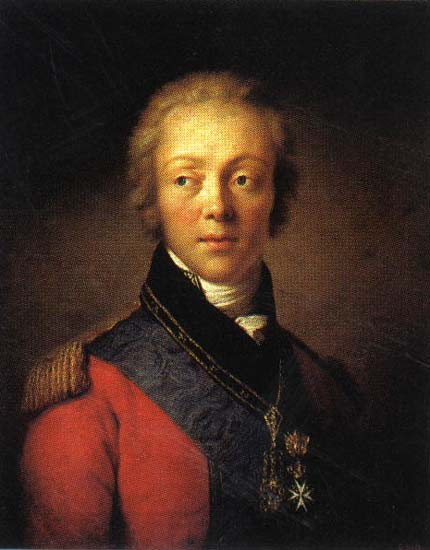

"러시아는 장소가 아니라 군대다" - 모스크바 포기
게시: 2020-11-16T06:30:46+09:00
9월 8일 잠에서 깬 러시아군은 어슬렁어슬렁 후퇴를 시작했습니다. 쿠투조프의 명령은 표면적으로는 좀더 방어에 용이한 6km 후방의 모자이스크(Mozhaisk)로 이동한다는 것이었습니다만, 곧 다시 모스크바 인근까지 후퇴한다는 명령으로 바뀌었습니다. 자연스럽게 후퇴 행렬은 군율이 헝클어졌지만 의외로 탈영은 많지 않았습니다. 미타레프스키(Nikolai Mitarevski)라는 포병 장교의 기록에 이때의 상황을 단적으로 보여주는 장면이 있습니다. 전날 전투 중에 그의 야포를 끄는 말들 중에 폭발탄 파편에 맞아 아래 턱이 부서져버린 말 한 마리가 있었습니다. 이 말은 출혈은 몰라도 곧 굶어죽을 것이 뻔했으므로 포가에서 풀어주고 가고 싶은 곳으로 가도록 보내주었습니다. 그러나 지난 10년 간 포병대에서 대포를 끄는 것 외에는 다른 삶을 알지 못했던 이 불쌍한 말은 참혹하게 부서진 턱을 매단 채로 그냥 포병대를 그대로 따라와서 병사들의 마음을 아프게 했습니다. 사실 대부분의 러시아 병사들의 처지도 이 말과 비슷했습니다. 다들 뭘 어찌해야 할 지 몰라 그냥 부대를 떠나지 않고 같이 움직였습니다. 후퇴하는 러시아군 선발대는 이틀만인 9월 9일 오후, 모스크바가 멀리 보이는 언덕에 도착하여 또 땅을 파고 보루를 쌓기 시작했습니다. 여기서 나폴레옹을 막고 모스크바를 지킨다는 것이 이유였지요. 쿠투조프는 또다시 여기저기에 편지를 써대며 모스크바를 사수하겠다고 큰 소리를 뻥뻥쳤습니다. 그런 편지를 받은 사람 중에는 당연히 모스크바 주지사인 로스톱친(Fyodor Rostopchin)도 있었습니다. 보로디노에서 승리했다는 러시아군이 모스크바 바로 바깥 쪽에서 땅을 파고 있다면 의심이 들 만도 했는데, 로스톱친은 그때까지도 적어도 겉으로는 동요하지 않았습니다. 로스톱친도 원래 군인이었고 파벨 1세 때부터 프랑스에 대해 강한 반감을 가진 귀족이었기 때문에 모스크바 방어에 대해 매우 적극적이었습니다. 그는 쿠투조프에게 '모스크바는 모든 경우에 대해 준비가 되어 있으며 필요시 수만의 건장한 시민들을 보충병으로 쿠투조프에게 보내주겠다'라고 답장을 썼습니다. 로스톱친은 시민들에게 '프랑스군은 하도 비리비리하므로 건초 묶음처럼 쇠스랑으로 찍어 던져버리면 된다' 라고 선동을 했고 최후의 경우에는 '돌팔매질을 해서라도' 프랑스군과 싸울 것을 다짐했습니다.

(로스톱친도 수보로프의 부하였고 프랑스와의 동맹 그리고 파벨 1세 암살에 대해 반대하는 입장이었습니다. 그 때문에 알렉산드르가 즉위하면서 그는 권력에서 멀어지게 되었습니다. 그러다 1810년 이후 대불 관계가 악화되면서 다시 알렉산드르에게 등용된 것인데, 그렇게 관직에서 물러났던 10년 동안 그는 자신의 장원에서 희곡과 소설을 쓰며 보냈습니다. 딱히 문학적 가치가 있지는 않았지만 그의 소설 중에는 '아 저 가증스러운 프랑스놈들!' 이라는 제목을 가진 것도 있었습니다.) 그러나 정작 쿠투조프의 부하들은 이렇게 모스크바 성벽 코 앞에서 참호를 파고 흙벽을 쌓고 있는 것이 몹시 불안했습니다. 톨(Toll) 같은 쿠투조프의 심복을 제외하고는 아직 아무도 쿠투조프의 본심을 몰랐기 때문입니다. 부하 장군들이 보기에 러시아군이 땅을 파고 있는 그 일대는 방어하기에 몹시 곤란한 지형이었고 전술적 전략적 가치가 전혀 없었습니다. 더군다나 바로 뒤가 모스크바였으므로, 나폴레옹이 우회하여 모스크바를 공격하면 속수무책으로 당할 수 밖에 없었습니다. 예르몰로프는 어느날 쿠투조프가 이 방어선에 대해 어떻게 생각하느냐고 묻길래 솔직하게 매우 좋지 않다고 답변했다가 쿠투조프로부터 조롱과 꾸지람을 들어야 했습니다. 이런 쿠투조프의 이중 플레이도 나름대로 이유가 있었습니다. 모든 러시아 장교들이 모스크바를 포기한다는 것은 상상도 하지 못할 일이라고 여기고 있었기 때문이었습니다. 쿠투조프는 그들에게 장단을 맞춰주어야 했습니다. 쿠투조프의 요청으로 9월 13일 러시아군 진영을 방문한 로스톱친은 원래 사기충천한 군대를 기대하며 왔으나, 막상 와보니 분위기가 매우 어수선하고 어정쩡한 것에 무척 놀랐습니다. 그래서 개별로 장군들을 만나며 '필요시 모스크바에서 시민들을 소개시키고 시내엔 불을 지르겠다' 라고 이야기했는데, 그런 말을 들은 모든 사람들이 모스크바 포기라는 생각 자체에 매우 화를 냈습니다. 그러나 여기서도 유일한 예외는 바로 바클레이였습니다. 그는 로스톱친과 이야기를 하며 '이 방어선에서 정말 싸운다면 그냥 여기서 명예롭게 전사하는 것이 내게 남은 최고의 선택'이라며 쿠투조프의 방어선에 대해 매우 솔직한 평가를 내렸습니다. 하지만 막상 쿠투조프를 만나보니 쿠투조프는 온갖 큰 소리를 쳐가며 이 자리에서 나폴레옹을 막아내겠다고 로스톱친을 안심시키려 했습니다. 그러나 그의 태도를 보고 로스톱친은 그가 이미 모스크바 방어를 완전히 포기한 것이 틀림없다고 생각했습니다. 그럼에도 불구하고 쿠투조프는 병사들의 사기를 돋우기 위해 성모상과 함께 정교회 사제들을 모시고 다음날 아침에 다시 방문해달라고 부탁까지 했습니다. 로스톱친이 모스크바로 돌아가자, 더 이상 참기 어려웠던 바클레이와 예르몰로프는 마침내 쿠투조프를 찾아와 이 지형은 도저히 방어불가라는 입장을 전달했습니다. 예르몰로프의 기록에 따르면 이떄 쿠투조프는 바클레이의 말을 듣고 너무나 기뻐하는 기색이 역력했다고 합니다. 알고보니 쿠투조프는 누군가 그런 소리를 할 때까지 기다리고 있었던 것입니다. 즉, 모스크바 포기의 책임을 전가할 희생양이 되어줄 사람을 기다리고 있었던 것이지요. 쿠투조프는 저녁 8시에 모든 주요 지휘관들을 소집하여 회의를 열었습니다. 그 자리에서 그는 '이 방어선의 방어가 불가능하다는 견해가 나왔으니 이제 후퇴를 해야 한다'라고 말을 꺼내며 다음과 같은 선언했습니다. "우리 야전군이 건재하여 교전 능력을 유지할 수 있다면 이 전쟁에는 승산이 있다. 그러나 야전군이 궤멸된다면 모스크바도 러시아도 끝장이다."
(쿠투조프의 경우에는 오딘의 말과 우선순위가 완전히 바뀌어 '국민보다는 군대가 우선'이 되었습니다. 이거야말로 부카니스탄의 '선군정치 !' )
이건 어떻게 보면 별 생각없는 후퇴 핑계처럼 들리지만 사실 굉장한 교리를 내포한 명언입니다. 보통은 군대가 존재하는 이유는 국가를 지키기 위한 것이고 수도와 시민을 위해 군대가 희생되는 것이 당연하다고 생각하기 쉽습니다. 다들 그게 명예로운 것이라고 여기고요. 그러나 쿠투조프는 반대로 군대를 지키기 위해 수도와 그 시민들을 적에게 내줘야 한다고 보았습니다. 여기서 승산 없는 전투에 군을 밀어넣었다가 군이 궤멸되면 모스크바도 러시아도 회복이 불가능하다고 본 것이지요. 쿠투조프는 최종 승리를 위해서는 수도가 아니라 군을 보호해야 한다고 믿었고, 실제로 그의 믿음이 옳았습니다. 물론 대부분의 러시아 장군들은 그런 제안에 대해 벌컥 화를 내며 일제히 반발했습니다. 우바로프와 오스테르만-톨스토이, 그리고 바클레이만 쿠투조프와 뜻을 같이 했고, 예르몰로프와 독투로프 등 대부분은 베니히센의 대안에 동조했습니다. 베니히센의 대안이란 '이 따위 방어선은 필요없으니 지금 당장 전진하여 프랑스군을 공격하자' 라는 것이었습니다. 비록 러시아군의 피해도 컸지만 프랑스군의 피해도 작지 않았으니 다시 한번 결전을 벌일 병력은 충분하다는 것이었습니다. 하지만 역시 이 상황에서 쿠투조프의 음흉한 속셈을 잘 알면서도 그의 뜻에 따라 놀아나준 것은 바클레이였습니다. 그는 공세로 나서기에 병력이 충분하다고 해도, 그 병력을 통솔할 일선 장교의 수가 너무 부족하다는 점을 지적했습니다. 애초에 공세로 나서기에는 러시아군의 숙련도가 떨어졌기 떄문에 보로디노에서 방어전을 치른 것인데, 이렇게 장교 수가 부족해진 마당에 공세는 불가능하다는 것이었습니다. 이 날카로운 지적에 라에프스키도 동조하면서 결국 후퇴론이 대세가 되었습니다. 이에 대해 베니히센은 대의와 체면을 앞세워 반격했습니다. 여기서 철수하고 모스크바를 나폴레옹에게 내준다면, 러시아군이 보로디노에서 사실 이긴 것이 아니라 졌다는 것을 우리 스스로 인정하는 꼴이 아닌가 하는 뼈를 때리는 지적이었지요. 이 지적질에 대해 또 지루하고 의미없는 토론이 30분 간 더 지속되었는데, 이 토론을 끝낸 것은 여태까지 입을 다물고 있던 쿠투조프였습니다. 그는 갑자기 툭 끼어들더니, "모스크바를 버리고 총퇴각한다"라고 선언을 해버렸습니다. 쿠투조프는 베니히센이 뭐라고 하든 예르몰로프가 뭐라고 하든 아무 것도 개의치 않았고 아마 듣고 있지도 않았던 모양입니다. 이렇게 제장들이 여전히 분노하는 가운데, 전쟁의 승리를 위해 '부하들의 조언에 따라 어쩔 수 없이' 모스크바를 포기한다는 모양새를 갖춘 뒤 후퇴 명령이 내려졌습니다.

(모스크바 외곽 마을인 필리(Fili)의 러시아군 사령부에서 참모회의를 열고 모스크바 포기를 결정하는 쿠투조프입니다. 알렉세이 키브쉔코(Aleksey Kivshenko)의 작품입니다.)

(독투로프(Dmitry Dokhturov)입니다. 그는 이 날 밤 쿠투조프의 만행에 치를 떨며 '이제 다 끝났고 난 군을 떠나겠다'라고 와이프에게 편지를 썼습니다. 쿠투조프를 성인처럼 묘사해놓은 톨스토이의 '전쟁과 평화'에서 독투로프는 일을 워낙 조용하게 잘 해서 높게 인정 받지 못하는 사람으로 묘사된다고 합니다. 저는 아직 못 읽어보았습니다.) 베니히센을 비롯한 장군들이 분노에 치를 떨었던 저녁 8시의 작전 회의는 어차피 아무 짝에도 쓸모없는 짓이었습니다. 왜냐하면 모스크바로 돌아간 로스톱친은 그 회의가 벌어지기 1시간 전인 저녁 7시, 이미 쿠투조프로부터 편지 한 통을 받았는데 그 내용은 '님아, 우리 모스크바 포기요'라는 짧막한 것이었습니다. 로스톱친도 배신감에 길길이 뛰었습니다만 할 수 있는 것이 별로 없었습니다. 11일 뒤의 일입니다만, 보로디노 전투에서 당한 부상으로 인해 시미(Simi)라는 마을에서 치료 중이던 바그라티온도 쿠투조프가 모스크바를 버렸다는 소식을 듣고 그 충격에 9월 24일 숨을 거두고 말았다고 합니다. Source : 1812 Napoleon's Fatal March on Moscow by Adam Zamoyski
en.wikipedia.org/wiki/Fyodor_Rostopchin